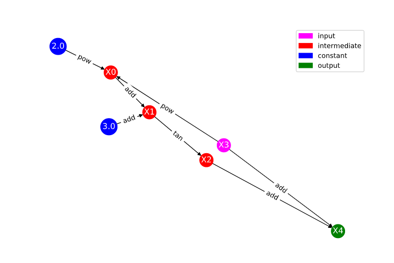
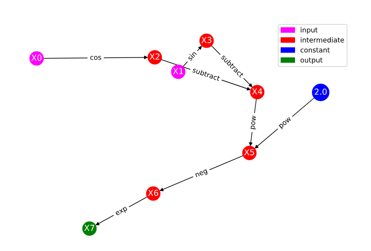

Solutions to Exercises¶
Module 1¶
Exercise 1: Motivating Automatic differentiation¶
A. Here is an example python function:
import numpy as np
import matplotlib.pyplot as plt
def numerical_diff(f, h):
def num_der(x):
return (f(x+h)-f(x))/h
return num_der
nd = numerical_diff(np.log, 1E-1)
nd2 = numerical_diff(np.log, 1E-7)
nd3 = numerical_diff(np.log, 1E-15)
x = np.linspace(.2, .4, 20)
plt.plot(x, nd(x), label = 'h=.1')
plt.plot(x, nd2(x), label = 'h=1e-7')
plt.plot(x, nd3(x), label = 'h=1e-15')
plt.plot(x, 1/x, '--', label='true')
plt.legend()
plt.xlabel('x')
plt.ylabel('df/dx')
- The corresponding graph output is:

- The numerical differentiation performs best for h=1e-7. For h too small, we encounter round off errors as a result of limited machine precision. For h too large, the numerical approximation is not exact. Automatic differentiation addresses this by evaluating derivatives exactly to machine precision without taking numerical estimates.
Exercise 2: Basic Graph Structure of Calculations¶
You should notice that while your labelling of the nodes may be different, the overall connectivity structure and edges should be the same.
Exercise 3: Looking Toward Multiple Inputs¶
Module 2¶
Exercise 1: Neural Network Problem¶
The corresponding computational graph is given by:

The table corresponding to this graph is given by:
| Trace | Elementary Function | Current Value | Elementary Function Derivative | \(\nabla_x\) Evaluated at (x,y) | \(\nabla_y\) Evaluated at (x,y) |
|---|---|---|---|---|---|
| \(x_1\) | \(x\) | \(x\) | 1 | 1 | 0 |
| \(x_2\) | \(y\) | \(y\) | 1 | 0 | 1 |
| \(x_3\) | \(w_{11} \times x_1\) | \(w_{11}x\) | \(w_{11}\dot{x_1}\) | \(w_{11}\) | 0 |
| \(x_4\) | \(w_{21} \times x_1\) | \(w_{21}x\) | \(w_{21}\dot{x_1}\) | \(w_{21}\) | 0 |
| \(x_5\) | \(w_{12} \times x_2\) | \(w_{12}y\) | \(w_{12}\dot{x_2}\) | 0 | \(w_{12}\) |
| \(x_6\) | \(w_{22} \times x_2\) | \(w_{22}y\) | \(w_{22}\dot{x_2}\) | 0 | \(w_{22}\) |
| \(x_7\) | \(x_3+x_5\) | \(w_{11}x+w_{12}y\) | \(\dot{x_3}+\dot{x_5}\) | \(w_{11}\) | \(w_{12}\) |
| \(x_8\) | \(x_4+x_6\) | \(w_{21}x+w_{22}y\) | \(\dot{x_4}+\dot{x_6}\) | \(w_{21}\) | \(w_{22}\) |
| \(x_9\) | \(z(x_7)\) | \(z(w_{11}x+w_{12}y)\) | \(z^\prime (x_7)\dot{x_7}\) | \(z^\prime (w_{11}x+w_{12}y)w_{11}\) | \(z^\prime (w_{11}x+w_{12}y)w_{12}\) |
| \(x_{10}\) | \(z(x_8)\) | \(z(w_{21}x+w_{22}y)\) | \(z^\prime (x_8)\dot{x_8}\) | \(z^\prime (w_{21}x+w_{22}y)w_{21}\) | \(z^\prime (w_{21}x+w_{22}y)w_{22}\) |
| \(x_{11}\) | \(w_{out,1}\times x_9\) | \(w_{out,1}z(w_{11}x+w_{12}y)\) | \(w_{out, 1}\dot{x_9}\) | \(w_{out,1}z^\prime (w_{11}x+w_{12}y)w_{11}\) | \(w_{out,1}z^\prime (w_{11}x+w_{12}y)w_{12}\) |
| \(x_{12}\) | \(w_{out,2}\times x_{10}\) | \(w_{out,2}z(w_{21}x+w_{22}y)\) | \(w_{out, 2}\dot{x_{10}}\) | \(w_{out,2}z^\prime (w_{21}x+w_{22}y)w_{21}\) | \(w_{out,2}z^\prime (w_{21}x+w_{22}y)w_{22}\) |
| \(x_{13}\) | \(x_{11}+x_{12}\) | \(w_{out,1}z(w_{11}x+w_{12}y)+w_{out,2}z(w_{21}x+w_{22}y)\) | \(\dot{x_{11}}+\dot{x_{12}}\) | \(w_{out,1}z^\prime (w_{11}x+w_{12}y)w_{11}+w_{out,2}z^\prime (w_{21}x+w_{22}y)w_{21}\) | \(w_{out,1}z^\prime (w_{11}x+w_{12}y)w_{12}+w_{out,2}z^\prime (w_{21}x+w_{22}y)w_{22}\) |
Exercise 2: Operation Count Problem¶
Computing the derivative at the six nodes \(x_3, x_4, x_5, x_6, x_{11}, x_{12}\) requires one multiplication in each of the 2 components, contributing \(6 \times 1 \times 2 = 12\) operations.
Computing the derivative at the 3 nodes \(x_7, x_8, x_{13}\) requires one addition in each of the 2 components, contributing \(3\times 1 \times 2 = 6\) operations.
Computing the derivative at the nodes \(x_9, x_{10}\) requires 2 operations (an elementary function evaluation of \(z^\prime\) and a multiplication) in each of the 2 components, contributing \(2\times 2 \times 2 = 8\) operations.
This gives us a total of 26 operations.
Module 3¶
Exercise 1: Reverse Mode Computational Table and Derivatives¶
The reverse computational table is given by:
| Node | Current Value | Numerical Value | \(\partial_1\) | \(\partial_1\) Value | \(\partial_2\) | \(\partial_2\) Value |
|---|---|---|---|---|---|---|
| \(x_1\) | \(x\) | 1 | 1 | 1 | 0 | 0 |
| \(x_2\) | \(y\) | 2 | 0 | 0 | 1 | 1 |
| \(x_3\) | \(x_1x_2\) | 2 | \(x_2\) | 2 | \(x_1\) | 1 |
| \(x_4\) | \(\exp(x_3)\) | \(e^2\) | \(\exp(x_3)\) | \(e^2\) | ||
| \(x_5\) | \(x_3+x_4\) | 2+:math:e^2 | 1 | 1 | 1 | 1 |
We can now trace back through the table to find the adjoints.
We note that in our bar notation we have \(\bar{x_1} = \frac{\partial f}{\partial x}\) and \(\bar{x_2} = \frac{\partial f}{\partial y}\).
Beyond the Basics¶
Exercise 1: Dual Numbers¶
To find the derivative, we look to the dual part when we replace x with \(a+b\epsilon\). For our function,
Since \(\epsilon^2=0\),
Expanding \(e^{2ab\epsilon}\) using a Taylor series,
So we have that the derivative evaluated at a is \(2ae^{a^2}\).
Exercise 2: Toy AD Example¶
An example AutoDiffToy class could look like:
class AutoDiffToy():
""" Creates an object for autodifferentiation.
ATTRIBUTES
==========
val : the value of the object
der : the derivative of the object
EXAMPLES
========
>>> x = AutoDiffToy(4)
>>> x.val
4
>>> x.der
1
"""
def __init__(self, a, d=1.0):
self.val = a
self.der = d
def __add__(self, other): #overload addition
try:
return AutoDiffToy(self.val+other.val, self.der+other.der)
except AttributeError:
other = AutoDiffToy(other, 0) # derivative of a constant is zero
return AutoDiffToy(self.val+other.val, self.der+other.der)
def __radd__(self, other): #ensure commutativity of addition
return self.__add__(other)
def __mul__(self, other): #overload multiplication
try:
return AutoDiffToy(self.val*other.val, self.val*other.der+other.val*self.der)
except AttributeError:
other = AutoDiffToy(other, 0)
return AutoDiffToy(self.val*other.val, self.val*other.der+other.val*self.der)
def __rmul__(self, other):
return self.__mul__(other)